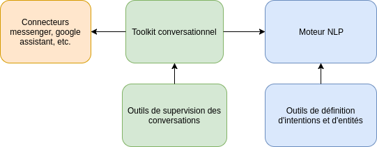

Bienvenue dans la documentation de Tock!¶
Tock (The Open Conversation Kit) est une initiative visant à promouvoir et à faciliter la construction d’agents conversationnels (ou bots).
Il s’agit d’une boite à outils qui met à disposition tous les éléments nécessaires pour construire des bots, qu'ils soient simple ou très complexes.
Contrairement à la plupart des autres solutions disponibles, il ne dépend pas d’API tierces (mais peut en intégrer aisément si nécessaire) : vous gardez le contrôle de vos données et de vos algorithmes.
L’ensemble est disponible en open-source sur github : https://github.com/voyages-sncf-technologies/tock sous la licence Apache 2.
Philosophie du projet¶
L’effort principal porte sur l’intégration et l’orchestration d’outils open-source tiers.
L’approche se veut à la fois humble, pragmatique et itérative : Tock ne redéveloppe pas d’outil open-source existant mais privilégie la réutilisation. De nouvelles fonctionnalités unitaires sont par ailleurs ajoutées régulièrement.
A ce jour, les librairies Stanford CoreNLP, Apache OpenNLP ou Duckling sont réutilisées et intégrées nativement.
Par ailleurs, Tock met à disposition les éléments manquants dans la panoplie open-source existante :
-
Une interface utilisateur permettant de définir des intentions ou des entités
-
Un toolkit conversationnel pour gérer le contexte des dialogues et l’historique des conversations
-
Divers connecteurs à des plateformes tierces

Etat du projet¶
Le projet est en cours de passage en open-source.
Certaines fonctionnalités de base ont déjà été intégrées, de nombreuses autres vont l’être dans les mois qui viennent.
A ce stade, Tock est considérée comme étant en version « alpha » : aucune rétrocompatibilité n’est garantie.
Tock dispose en interne d’une importante batterie de tests, mais ces tests n’ont pas été passés en open-source car ils présentent des adhérences fortes au métier de voyages-sncf.com. Ces tests seront migrés provisoirement.
Technologies¶
La plateforme applicative se base sur la JVM.
Le langage de référence est Kotlin.
Le reste de la stack applicative est constituée de Vert.x et MongoDB, même si pour l’instant les applications sont essentiellement développés en « blocking IO ». En cible, l’approche « fibers » ( cf http://docs.paralleluniverse.co/quasar/) sera privilégiée.
Les interfaces d'administration sont implémentées en Angular/Typescript.
Les différents projets open-sourcés¶
-
Le projet principal se trouve sous licence Apache OpenNLP : https://github.com/voyages-sncf-technologies/tock
-
Cependant une dépendance optionnelle, Stanford CoreNLP, est sous licence GPL. Le code utilisant cette dépendance se trouve donc dans un projet à part, sous licence GPL : https://github.com/voyages-sncf-technologies/tock-corenlp
Enfin deux autres projets sont mis à disposition :
- Le projet contenant les images dockers : https://github.com/voyages-sncf-technologies/tock-docker
- Le projet contenant un exemple d'implémentation de bot : https://github.com/voyages-sncf-technologies/tock-bot-open-data